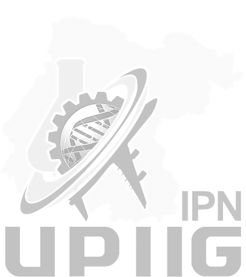

Reconocimiento de Equipos
Práctica 1 | Laboratorio de Operaciones Unitarias

Resumen
Los sistemas de bioseparación son una parte fundamental de los procesos biotecnológicos, ya que permiten la recuperación, purificación y aislamiento de productos de interés, como proteínas, enzimas, antibióticos y algunos productos inorgánicos. Para llevar a cabo estos procesos, se requiere el uso de diversas tecnologías y equipos especializados.
En esta primera práctica del laboratorio de bioseparaciones, realizamos un recorrido por las instalaciones con el objetivo de conocer las distintas unidades y sistemas que se utilizan en procesos de separación fisicoquímicos. Esta actividad introductoria es clave para familiarizarnos con el entorno de trabajo y los principios de operación de cada equipo.